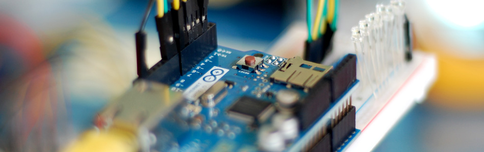

Pin Control Over the Internet – Arduino + Ethernet

As per our usual style, I am going to make this as simple as possible so it is easier to extend. So if you you are looking for something with an HTML interface, this article will not be covering that.
The Arduino Ethernet Shield is capable of being both a client (like a web browser), and a server, and with the onboard SD card-slot can be quite powerful by hosting up full websites, but for this article we are just looking at using the Arduino as a server and you will control it simply by going to a specific URL.
Note that the Ethernet Shield uses digital pins, 10, 11, 12, and 13 for itself, so it is best to leave these alone and not try to use them for anything else.
Getting It On The Net
Getting the ethernet shield on the internet is going to differ depending on your network, but no matter what, you need to plug it into an ethernet port connected to the internet – So make sure you do that.
Without an extra library, the ethernet code does not support DHCP and therefore requires that we hardcode the IP Address,gateway address, and subnet mask for your network. This isn’t really that hard, it is more of a pain when especially if you want to plug it into a different network as the same settings may not work.
As of Arduino 1.0, the library does support DHCP So you should be able to just plug it into your network and have it work. It will report the ipAddress to the serial monitor
We also left the code in there to do a manual setup if you prefer doing it that way. (I know I do) If you are familiar with your network and how to do this, awesome, just make sure you change the setting at the top of the code to fit your network, and un comment out the parts related to it. If you are not familiar with it, we can help you in the forum, and have posted some general help in there as well.
{kind=link}
Hooking It Up
Aside from plugging the Ethernet Shield into you Arduino, there isn’t really anything you HAVE to have. I have LEDs on pins 2-9 on this example so we can see it being controlled. If you do not intend to blink LEDs or test the code with LEDs, you can by all means leave these off.
Code
Assuming the the ip address of the arduino is 192.168.1.167 (check the serial monitor to see what it is), this code will allow you to send a sequence to the arduino via your web browser like so: http://192.168.1.167/?23456789
The way the code is currently setup is that the pins will go high one at a time, in sequence, for 25ms then move on to the next in line. So this example would blink pin 2,3,4,5,6,7,8 then 9.
As it stands, the user will not see the webpage return until the arduino is finished processing the request. You could change the code to return right away and then process the request afterwards if needed, but I liked seeing the return after it was completed – like a receipt, instead of an order.
#include <Ethernet.h> #include <SPI.h> boolean reading = false; //////////////////////////////////////////////////////////////////////// //CONFIGURE //////////////////////////////////////////////////////////////////////// //byte ip[] = { 192, 168, 0, 199 }; //Manual setup only //byte gateway[] = { 192, 168, 0, 1 }; //Manual setup only //byte subnet[] = { 255, 255, 255, 0 }; //Manual setup only // if need to change the MAC address (Very Rare) byte mac[] = { 0xDE, 0xAD, 0xBE, 0xEF, 0xFE, 0xED }; EthernetServer server = EthernetServer(80); //port 80 //////////////////////////////////////////////////////////////////////// void setup(){ Serial.begin(9600); //Pins 10,11,12 & 13 are used by the ethernet shield pinMode(2, OUTPUT); pinMode(3, OUTPUT); pinMode(4, OUTPUT); pinMode(5, OUTPUT); pinMode(6, OUTPUT); pinMode(7, OUTPUT); pinMode(8, OUTPUT); pinMode(9, OUTPUT); Ethernet.begin(mac); //Ethernet.begin(mac, ip, gateway, subnet); //for manual setup server.begin(); Serial.println(Ethernet.localIP()); } void loop(){ // listen for incoming clients, and process qequest. checkForClient(); } void checkForClient(){ EthernetClient client = server.available(); if (client) { // an http request ends with a blank line boolean currentLineIsBlank = true; boolean sentHeader = false; while (client.connected()) { if (client.available()) { if(!sentHeader){ // send a standard http response header client.println("HTTP/1.1 200 OK"); client.println("Content-Type: text/html"); client.println(); sentHeader = true; } char c = client.read(); if(reading && c == ' ') reading = false; if(c == '?') reading = true; //found the ?, begin reading the info if(reading){ Serial.print(c); switch (c) { case '2': //add code here to trigger on 2 triggerPin(2, client); break; case '3': //add code here to trigger on 3 triggerPin(3, client); break; case '4': //add code here to trigger on 4 triggerPin(4, client); break; case '5': //add code here to trigger on 5 triggerPin(5, client); break; case '6': //add code here to trigger on 6 triggerPin(6, client); break; case '7': //add code here to trigger on 7 triggerPin(7, client); break; case '8': //add code here to trigger on 8 triggerPin(8, client); break; case '9': //add code here to trigger on 9 triggerPin(9, client); break; } } if (c == '\n' && currentLineIsBlank) break; if (c == '\n') { currentLineIsBlank = true; }else if (c != '\r') { currentLineIsBlank = false; } } } delay(1); // give the web browser time to receive the data client.stop(); // close the connection: } } void triggerPin(int pin, EthernetClient client){ //blink a pin - Client needed just for HTML output purposes. client.print("Turning on pin "); client.println(pin); client.print("<br>"); digitalWrite(pin, HIGH); delay(25); digitalWrite(pin, LOW); delay(25); }
Video
Extending This
By adding to, or changing, the switch statement in the code, you could easily add support for letters as well allowing you to call even more functions over the web. You can also change the code that is run if needed. So instead of blinking pins, maybe you control motor directions or timing. This could be easily be used for automation or art installations.
If I can take the non ethernet version of this article and make web controllable bells, just imagine what you can do with this.
Article taken from bildr.org with minor changes - I am the original author of this content